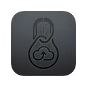

LinkUnzip
Extract a ZIP straight from a link into a folder, without ever saving the ZIP.
-
Add the extension
Done.
-
Install the LinkUnzip helper for Windows
Checking this PC...
A newer helper is available: it adds Browse..., choosing files and Resume. Update the helper
A browser extension can't write files to your disk by itself, so a small helper program does the downloading and unpacking. It installs just for you (no administrator rights) and only runs while you're using LinkUnzip.
Download not published yetWhen it's downloaded, click Open the installer, then Install. If the browser asks, choose Keep. Windows may say it doesn't recognise the app: click More info, then Run anyway.
This page notices the helper by itself a few seconds after it is installed. If it doesn't, close every browser window and open the browser again.
Prefer the terminal?
With linkunzip.exe downloaded, this does the same as the installer:
linkunzip host install -
Try it
Right-click any link to a .zip file and choose Extract with LinkUnzip. Or click the LinkUnzip icon in the toolbar and paste a link.
Can't see the icon? Click the puzzle piece next to the address bar, then the pin next to LinkUnzip.